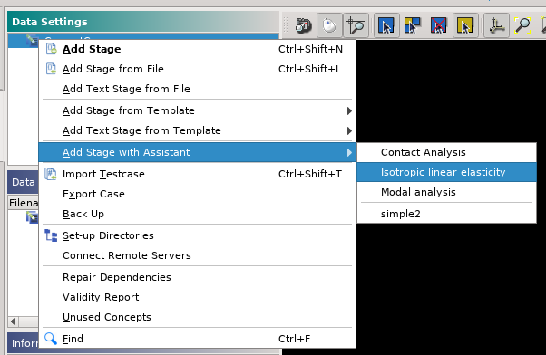

Integration with AsterStudy¶
AsterStudy application automatically detects user-defined calculation assistants
located in the user’s home directory ~/.config/salome/asterstudy_assistants.
The possibility to configure locations of calculation assistants will be added
in the application in future.
In the application, available calculation assistants are listed in the main menu Operations > Add Stage Using Assistant, or from the context menu for the Case item in the Data Settings panel.

Launch calculation assistant
Pressing Finish button in the assistant’s wizard dialog creates a stage in the study.